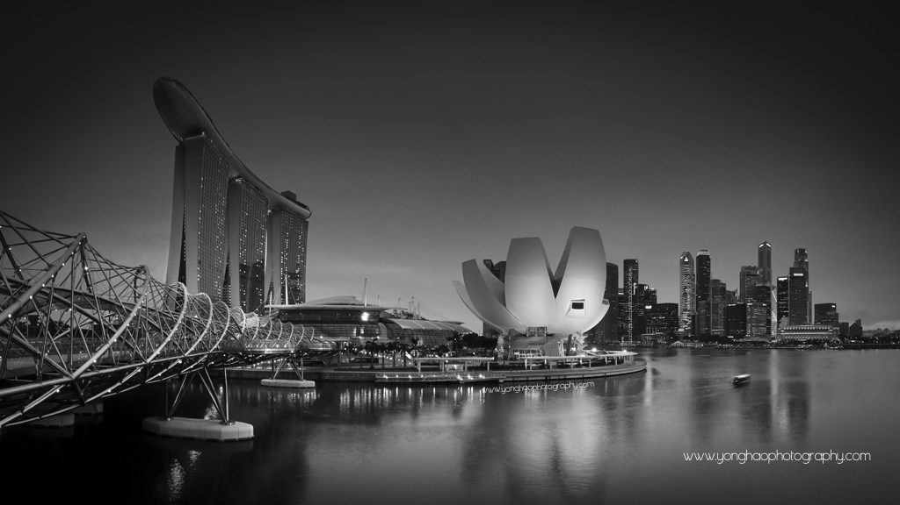
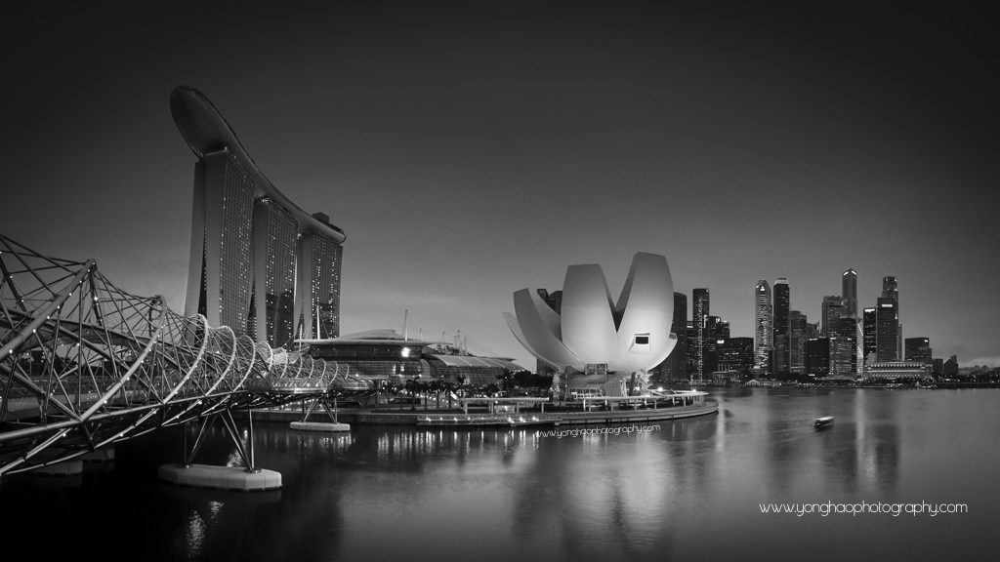

Photography for me is not looking, it’s feeling. If you can’t feel what you’re looking at, then you’re never going to get others to feel anything when they look at your pictures. It’s one thing to make a picture of what a person looks like, it’s another thing to make a portrait of who they are. If the photographer is interested in the people in front of his lens, and if he is compassionate, it’s already a lot. The instrument is not the camera but the photographer.
~ Rurdanil Sarkar